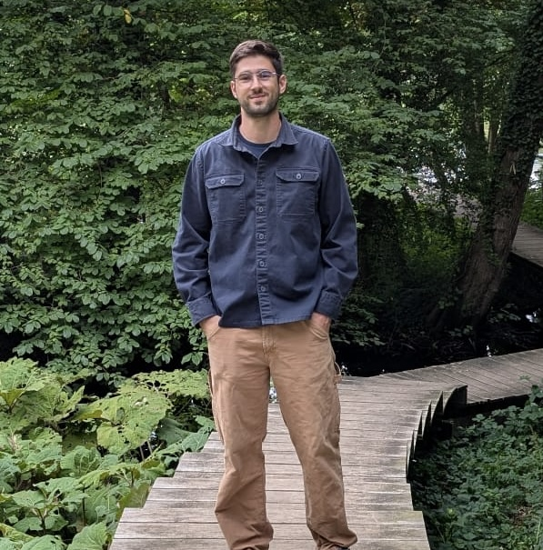

Visiting Ph.D. student
Mar–Aug 2026University of Southern Denmark, hosted by Prof. Arthur Zimek
Machine learning for dialysis failure detection, counterfactual explanations and time series analysis.
Ph.D. student in Information and Communication Technology
DIMES, University of Calabria
I work on anomaly detection, continual learning and explainable AI: models that notice when data stops behaving as expected, and can say why.

I’m a Ph.D. student at the Department of Computer Engineering, Modeling, Electronics and Systems Engineering (DIMES) of the University of Calabria, advised by Prof. Fabrizio Angiulli and Prof. Fabio Fassetti. From March to August 2026 I was a visiting Ph.D. student at the University of Southern Denmark, hosted by Prof. Arthur Zimek.
My work is on neural machine learning methods, along these lines. In the group I implement our methods, run the experimental campaigns and maintain our open-source code on AIDALab-DIMES.
Post-hoc explanations for black-box models. LLiMe uses large language models to build the neighborhood a local surrogate is trained on, which yields more readable explanations and counterfactuals. ECAM clusters tokens on each attention head of a Transformer and combines the groupings by ensemble clustering.
TiLLMeOut is a zero-shot, prompt-free detector: it writes a univariate series as text, reconstructs it with the language-modeling head of a pre-trained BART and scores each point by its reconstruction error, refining iteratively to expose masked anomalies.
A survey that gives continual anomaly detection a unified formalization, evaluation framework and taxonomy, and ADoCL, a task-agnostic filter in front of any continual learner that tells new tasks and concept drift apart from genuine anomalies, so that only reliable data updates the model.
During my visit to SDU I worked on machine learning for dialysis failure detection, counterfactual explanations and time series analysis.
A comprehensive survey on continual anomaly detection
Neurocomputing 707, 2027 Journal
ADoCL: Anomaly-Aware Dynamic Concept Maintenance for Reliable Continual Learning
Similarity Search and Applications (SISAP 2026), 2027 Conference
Top 5 best papers at SISAP 2026, invited to the Information Systems special issue
TiLLMeOut: Time Series Large Language Models-Based Outlier Detection
Discovery Science (DS 2026), 2027 Conference
Attention to those tokens! Ensemble Clustering can explain Attention-based Text Classifiers
Proceedings of the 35th ACM International Conference on Information and Knowledge Management (CIKM 2026), 2026 Conference
LLiMe: enhancing text classifier explanations with large language models
Machine Learning 114, 2025 Journal
Large Language Models-Based Local Explanations of Text Classifiers
Discovery Science (DS 2024), 2025 Conference
Updated from ORCID on 7 November 2026. Download all as BibTeX.
University of Southern Denmark, hosted by Prof. Arthur Zimek
Machine learning for dialysis failure detection, counterfactual explanations and time series analysis.
DIMES, University of Calabria, advised by Prof. Fabrizio Angiulli and Prof. Fabio Fassetti
Explainable AI, anomaly detection and continual learning. Scholarship under D.M. 118/2023 for the digitalization of public administration.
AIDALab-DIMES research group
I write and maintain the official implementations of LLiMe, TiLLMeOut, ADoCL and ECAM, in Python with PyTorch, scikit-learn, NumPy and pandas.
Since 2024 I run the lab sessions of Machine and Deep Learning, with notebooks covering linear models, support vector machines, CNNs, RNNs, GNNs, autoencoders, VAEs, GANs, reinforcement learning and explainable AI.
University of Calabria
University of Calabria, 110/110 cum laude
Thesis: Study and experimentation of negative learning approaches for anomaly detection. Advisor Prof. Fabrizio Angiulli, co-advisor Dr. Luca Ferragina.
University of Calabria, 110/110 cum laude
Thesis: Microservice architectures and service mesh. Advisor Prof. Sergio Flesca.